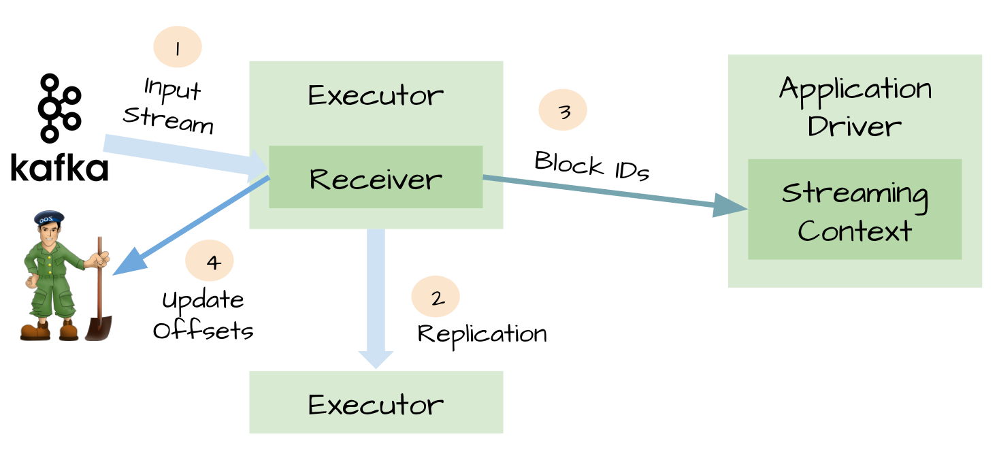
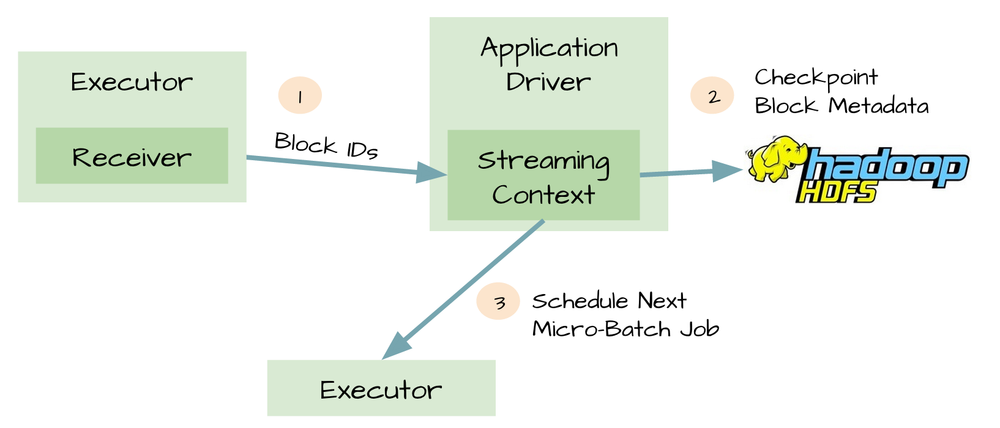
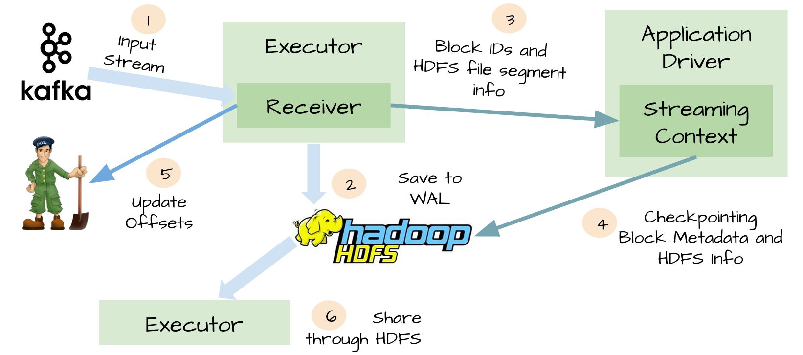
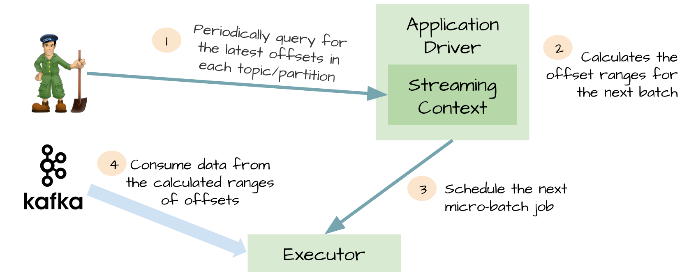
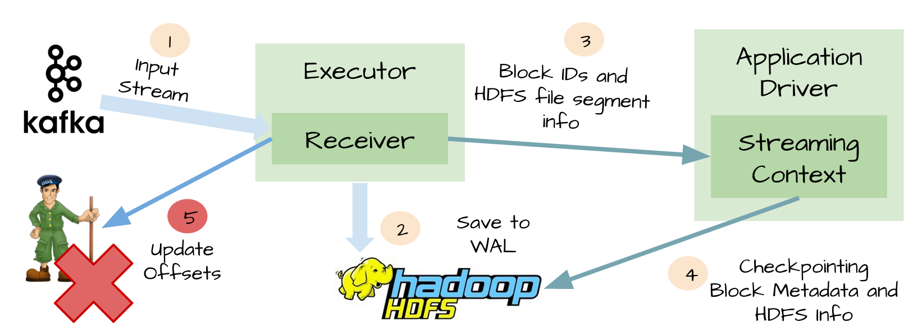

Spark Streaming消费Kafka数据
首先考虑Spark Streaming消费Kafka数据时，如何保证数据不丢失
参考资料:Recent Evolution of Zero Data Loss Guarantee in Spark Streaming With Kafka
Improvements to Kafka integration of Spark Streaming
丢失的情况包括：
- Spark Streaming正在读取Kafka的数据，突然挂掉；
- Spark Streaming读取完Kafka的数据，在保存offset前（包括保存到Kafka的zookeeper或者某种持久化存储）挂掉。
Spark Streaming从1.3以后提供2种方式消费Kafka数据，一种利用Receiver读取Kafka数据，生成DStream，然后供后续的task进行处理；另一种通过Driver计算每批次要消费的offset范围，由task的Executor通过Kafka简单API直接消费
问题：两种方式产生的DStream中的RDD进行partition的逻辑各是什么？第二种方式Executor的个数是否和Kafka主题的partition数目一致？
下面分别看看两种方式有哪些容错手段：
方式一：利用Receiver
代码如下：
首先，保证Receiver的可靠性：

- 首先
Receiver从Kafka读取数据 - 得到一段数据，生成RDD(?)之后，数据复制到2个
Executor - 告知
Driver该段Block的所有ID - 更新
Zookeeper中的offset信息
当Receiver挂掉重启后，可根据Zookeeper中的offset信息继续读取Kafka消息
其次，保证Driver的可靠性：

开启checkpoint机制后，driver会把以下信息保存到HDFS等可靠存储上：
- 配置信息
- 代码
- 一些排队等待处理但没有完成的RDD（仅仅是metadata，而不是data）
这样，在Driver挂掉重启后，能根据以上信息重新构造Driver继续运行
但即使做了上述的2项设置，仍然存在丢失数据的可能，主要是以下的场景：
回到图1的场景下
- 在第2步，数据正确复制到2个Executor，并缓存在它们的内存中；
- Receiver告知Kafka消息已消费（更新了ZK中的offset）
- Executor开始处理缓存在内存中的数据
- 这时，Driver挂了
- 由于Spark的机制，Driver挂了之后，由它启动的所有Executor都要kill掉
- 在处理数据的Executor进程被kill掉，缓存的内存自然也没有了，但由于Receiver认为这些数据已经消费了，因此这部分数据无法再恢复。
于是，从Spark1.2开始引入一个WAL（Write ahead log）的东东，简单来说就是在Receiver把数据复制到Executor前，先写到可靠存储上，如图：

自此，再也不用担心数据会丢失了。
方式二：Direct Stream

- 一开始Driver负责从ZK查询每个topic/partition的最新offset
- 计算下个batch的offset范围
- 将offset范围交给Executor
- Executor利用Kafka的SimpleConsumer API访问Kafka，消费消息
- Executor计算成功后通知Driver，Driver会将offset信息保存到checkpoint中
Exactly-once Spark Streaming from Apache Kafka——对内部实现说得比较清楚
BUT，如果要保证数据要且只能消费一次呢？
设想一下如果在Receiver更新ZK之前挂掉了，如下图：

- Kafka的消息已经成功通过WAL写进HDFS
- Spark Streaming也已经成功处理完这些数据
- Receiver更新ZK的offset之前挂掉！
- Receiver重启恢复，从WAL中恢复上次消费的数据
- 继续消费Kafka消息，但由于Receiver使用的是Kafka的高级API，会根据ZK中记录的已消费的offset往后继续消费，因此有部分消息会重复消费计算
最后考虑性能
WAL有2个缺点：
由于从Receiver取到的数据要先持久化，因此会降低消费的吞吐量（一个解决办法就是增加Receiver），代码如下：
12345val kafkaParams: Map[String, String] = Map("group.id" -> "terran", /* ignore rest */)val numStreams = 5val kafkaStreams = (1 to numStreams).map { i => KafkaUtils.createStream(..., kafkaParams) }val unifiedStream = streamingContext.union(kafkaStreams)unifiedStream.print()增加存储空间：同一份数据在Kafka有一份，在HDFS也有一份
- 创建多个
Input DStreams12345val kafkaParams: Map[String, String] = Map("group.id" -> "terran", /* ignore rest */)val numStreams = 5val kafkaStreams = (1 to numStreams).map { i => KafkaUtils.createStream(..., kafkaParams) }val unifiedStream = streamingContext.union(kafkaStreams)unifiedStream.print()
按以上方式创建的5个Input DStream，都是Kafka消费组terran的成员，它们可以共同消费Kafka特定主题的消息，在KafkaUtils.createStream方法中，可以设置单个Input DStream的消费者线程数